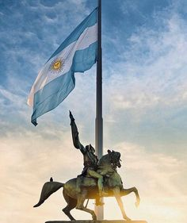
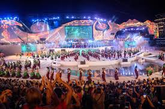

Tradiciones y Cultura
Argentina
Argentina es un país con una rica herencia cultural influenciada por raíces indígenas, criollas y europeas. Es mundialmente conocida por el tango, un baile y género musical que nació en Buenos Aires. El mate, una infusión tradicional, es un símbolo de unión social, mientras que el asado representa la pasión por la carne y las reuniones familiares. El fútbol es una verdadera pasión nacional, con grandes figuras como Maradona y Messi. Además, el folklore, con danzas como la zamba y la chacarera, y celebraciones como el carnaval, destacan su diversidad cultural y su orgullo por las tradiciones.
SearchAsado Argentino
El asado argentino es más que una simple comida; es un evento social que se disfruta con amigos y familiares. Se trata de carnes asadas lentamente en una parrilla, a menudo acompañadas de ensaladas, pan y vino. Es una tradición profundamente arraigada en la cultura gaucha y una parte esencial de la vida social argentina.

Mate
El mate es una infusión de hojas de yerba mate, consumida principalmente en el norte y centro del país, pero también en muchas otras regiones. Es un símbolo de hospitalidad y camaradería, ya que se comparte entre amigos o familiares. Beber mate es una costumbre diaria en muchas familias argentinas.
.jpg)
Carnaval
Aunque más reconocido en Brasil, Argentina también celebra el carnaval con mucha alegría, sobre todo en las provincias del norte y el litoral. En Gualeguaychú (Entre Ríos) y Corrientes, se realizan desfiles espectaculares con comparsas, carrozas, y disfraces de colores vibrantes, que atraen a miles de visitantes.
El Alfajor
Este género musical y de danza, nacido en Buenos Aires a finales del siglo XIX, es un emblema de la cultura argentina. Con su pasión y elegancia, el tango ha conquistado el mundo y es reconocido como Patrimonio Cultural Inmaterial de la Humanidad por la UNESCO. Se baila en milongas (salones de baile) y es una de las tradiciones más representativas del país.

La Fiesta Nacional de la Vendimia
Celebrada en Mendoza, la Fiesta Nacional de la Vendimia honra la cosecha de uvas y la producción de vino, una de las principales industrias argentinas. La fiesta incluye desfiles, música, danzas y la elección de la Reina de la Vendimia, y atrae a miles de turistas cada año.
Cumbia y Rock Nacional
La música popular en Argentina también incluye géneros como la cumbia y el rock nacional, ambos con una fuerte identidad local. El rock argentino tiene una historia rica, con bandas como Soda Stereo y Los Fabulosos Cadillacs que influyeron en toda América Latina.